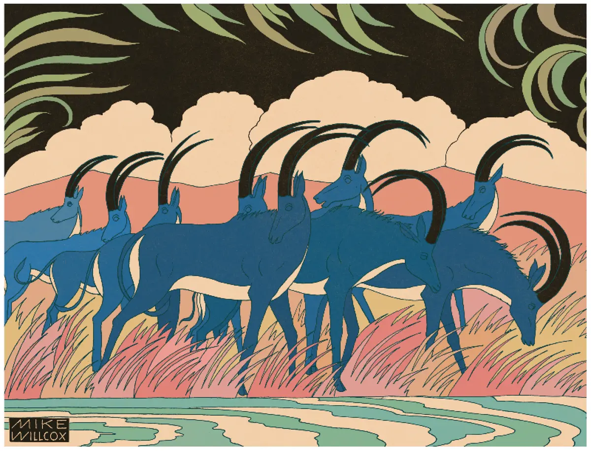
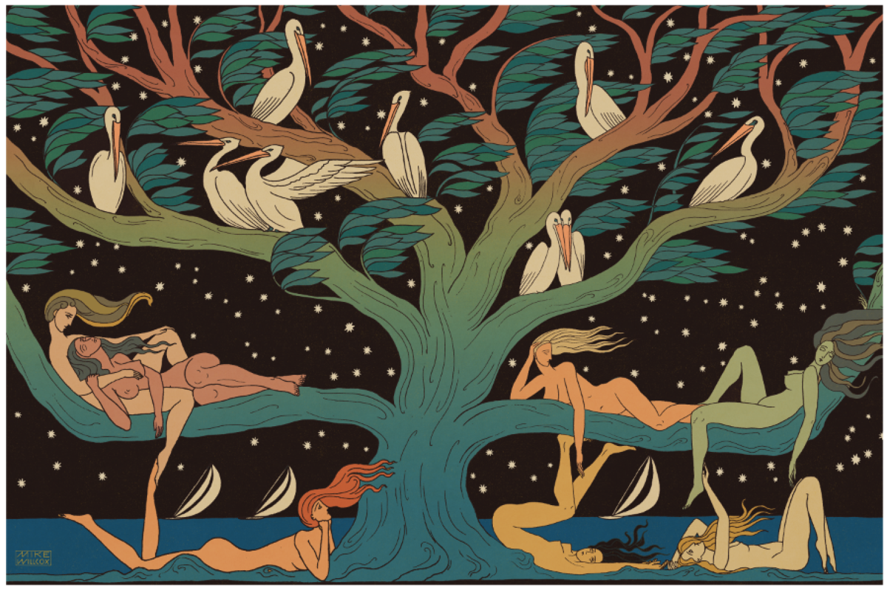
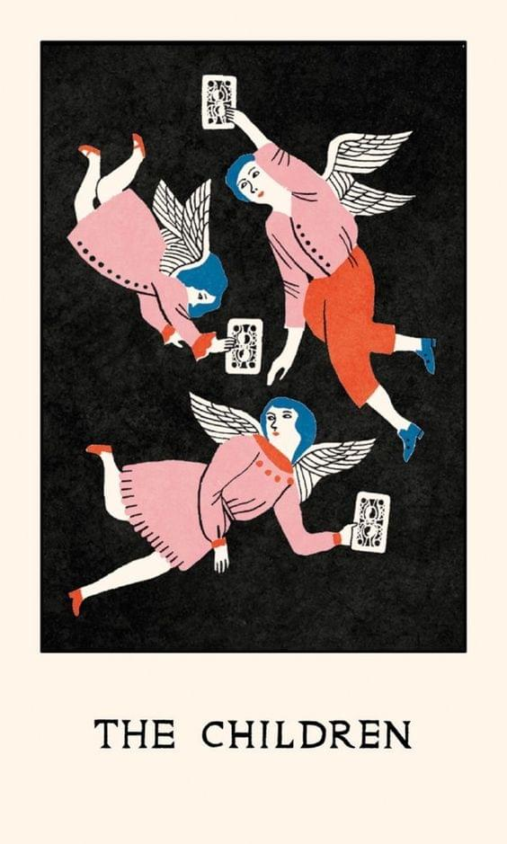

Тихий гендерный переворот. Как женщины стали главными потребителями искусства
Альтернативными вариантами развития экономики России под влиянием внешних факторов может быть сдержанный рост в условиях фрагментации или двухлетний кризис, вызванный эффектом домино, считают в ЦБ
ЦБ представил два альтернативных варианта развития экономики России в зависимости от внешних условий: сценарии «Усиление фрагментации» и «Рисковый», — следует из проекта «Основные направления единой государственной денежно-кредитной политики на 2024 год и период 2025 и 2026 годов», опубликованного Банком России 11 августа.
В базовом сценарии регулятор ждет, что мировая экономика продолжит развиваться в рамках текущих трендов и в отсутствии новых шоков. Он не предполагает значимого изменения геополитических условий до конца прогнозного горизонта. ВВП России в 2023 году вырастет на 1,5–2,5% и будет оставаться в положительной зоне до 2026 года включительно. Инфляция в текущем году не превысит 6,5% и в дальнейшем будет держаться на уровне таргета 4%. Ключевая ставка достигнет максимальных значений в 2024 году (8,5–9,5%) и далее будет постепенно снижаться.
Сценарий усиления фрагментации
Высокий уровень геополитического напряжения в мире и рост соперничества во многих сферах, в том числе в производстве критически важных товаров для современной экономики (например, микрочипов и электронных процессоров), могут спровоцировать усиление процесса разделения стран на блоки, считают в ЦБ.
«Страны все в большей степени стремятся локализовать производства на своих территориях, все больше стремятся заменить принцип партнерства на основе экономических соображений (таких, например, как оптимизация затрат) на критерии географической близости и дружественности в геополитической повестке (решоринг и френдшоринг). Все это приводит к реконфигурации цепочек поставок и фрагментации мировой торговли», — отмечают в ЦБ.
Ничего не может быть приятнее, как жить в уединении, наслаждаться зрелищем природы и почитать иногда какую-нибудь книгу
В результате мировой спрос сократится, а «уровень санкционного давления на российскую экономику, вероятно, усилится», говорится в докладе. Это скажется на спросе на российский экспорт как с точки зрения объема поставок, так и цен. «Цена на нефть марки Urals будет постепенно снижаться и к 2025 году достигнет $45/барр., оставаясь на этом уровне до конца прогнозного горизонта», — прогнозируют в ЦБ.
Сценарий эффекта домино
Повышение ставок денежно-кредитной политики развитыми странами в текущем цикле уже является одним из самых быстрых в истории. Вдобавок оно происходит после почти 15-летнего периода околонулевых ставок центральных банков этих стран, отмечают в ЦБ. И если ранее на фоне низких ставок инвесторы искали доходность в высокорисковых активах, то сейчас такие активы стали наиболее уязвимыми — «они первыми теряют в стоимости и при ухудшении ситуации могут быстро стать «невозвратными потерями», констатируется в докладе.
Повышение ставок приводит к снижению стоимости и традиционных и надежных активов, таких как государственные облигации или недвижимость, а кроме того, могут расти затраты на обслуживание долга и затраты на его рефинансирование. Все это формирует риски финансовой стабильности, считает регулятор.
- Осознайте эмоцию. Для этого нужно задать себе вопрос: «Что я сейчас чувствую?» Распознав эту эмоцию, спросите себя: «Что меня задевает? Какая моя потребность задета?» Например, коллегу наградили и похвалили на работе. Кто-то за него порадуется, а кто-то, наоборот, позавидует. Тут важно не избавиться от эмоции, потому что она якобы плохая, а разобраться в причине этой эмоции — возможно, человеку не хватает признания. Нужно понять, где можно получить это признание.
- Умейте делать паузу. Если мы не понимаем, как вести себя в ситуации, например, когда кто-то из коллег неожиданно грубит, лучшим решением будет сделать паузу. Найдите несколько минут, чтобы отойти от ситуации и успокоиться. Прогуляйтесь, выпейте воды или сделайте несколько упражнений на глубокое дыхание, чтобы расслабиться. Таким образом, мы даем себе возможность не испортить коммуникацию, которая могла начаться неправильно.
- Не принимайте на свой счет. На самом деле эмоции коллег не связаны с нами лично. Злость или раздражение, которые они проявляют, обусловлены не вашей личностью, а их собственными мыслями и неудовлетворенными потребностями. Не нужно бояться их эмоциональных реакций.
- Присмотритесь к тем. Кто лучше справляется с эмоциями. Наверняка в вашем коллективе или в вашем окружении есть человек, который довольно спокойно реагирует на эмоциональных людей или в стрессовых ситуациях. В качестве примера можно взять даже героя из фильма или сериала, который остается невозмутимым в любых ситуациях. Обратите внимание на его поведение: тон голоса, манеры и привычки. Вы можете многое почерпнуть у него.
«Повышенный оптимизм, наблюдаемый в настоящее время на рынках, может быстро смениться неуверенностью и масштабным избавлением от рисковых активов. Реализация процентного риска для нескольких крупных участников рынка может привести к росту неопределенности и снижению доверия к финансовой системе в целом, может вызывать эффект домино и вылиться в мировой кризис, сопоставимый по масштабам с кризисом 2007–2008 годов», — опасаются в ЦБ.
В результате на фоне рецессии в двух крупнейших экономиках (США и еврозоне) мировой спрос резко упадет. Цены на нефть будут снижаться весь 2024 год и к 2025 году опустятся до $30/барр. Сокращение выпуска российской экономики будет продолжаться два года, в 2024 году снижение ВВП будет в диапазоне 3–5%, а в 2025-м — 2–3%. Восстановительный этап начнется только в 2026 году.
Инфляция в первый год шока вырастает до 11–13%. Для предотвращения раскручивания инфляционной спирали через вторичные эффекты инфляционных ожиданий Банк России будет вынужден существенно поднять ставку по сравнению с базовым сценарием — в среднем за год она сложится в диапазоне 12,5–13,5%. Начало цикла снижения ставки будет возможно уже в конце 2024 года, однако в 2025-м ее средний уровень все равно останется в жесткой области из-за сохраняющихся проинфляционных рисков со стороны внешних условий.
Экономика России выросла год к году
Росстат предварительно оценил, что экономика России в апреле—июне 2023 года выросла на 4,9% в годовом выражении. «Индекс физического объема ВВП во втором квартале 2023 года относительно второго квартала 2022 года, по предварительной оценке, составил 104,9%», — сообщили в статистическом ведомстве. Более высокий прирост показатель в последний раз демонстрировал только в четвертом квартале 2021 года (+5,8%), следует из данных Росстата.
Предприниматель — человек, думающий о том, как сделать вещи лучше, как их адаптировать и принести пользу обществу.
В плюсовую зону ВВП России в сравнении год к году вышел впервые с начала 2022-го: в первом квартале того года показатель вырос на 3%. В следующие четыре квартала наблюдался спад экономики в годовом выражении, причем наиболее глубокая его фаза была зафиксирована ровно год назад, во втором квартале 2022-го (минус 4,5%). Но если рассматривать динамику ВВП в измерении квартал к предыдущему кварталу (с исключением сезонности), то уже в третьем квартале показатель перешел к росту, писал РБК.
Как было на самом деле
«Революция гвоздик», свершившаяся 25 апреля 1974 года, — заслуга португальских военных, покончивших с диктатурой внутри страны и с колониальными войнами. Но прежде чем выйти на путь демократического развития европейского образца, Португалии, её политикам и народу пришлось побороть в себе искушение ещё одной диктатурой — красной.
Португалии, её политикам и народу пришлось побороть в себе искушение ещё одной диктатурой — красной.
Также статслужба немного скорректировала в лучшую сторону оценку спада ВВП за первый квартал 2023 года — с 1,9 до 1,8%.«Российская экономика не только компенсировала спад второго квартала прошлого года, но и показала прирост к уровню двухлетней давности», — прокомментировала пресс-служба Минэкономразвития после выхода материала.
Способ №1
В каких сферах наблюдался рост
Предварительная оценка ВВП выполнена на основе производственного метода и данных оперативной статистической отчетности крупных и средних предприятий нефинансового сектора экономики, уточнили в Росстате. ВВП, рассчитываемый таким образом, представляет собой сумму валовой добавленной стоимости всех отраслей или институциональных секторов в основных ценах и чистых налогов на продукты. Данные не включают статистическую информацию по Донецкой и Луганской народным республикам, Запорожской и Херсонской областям.
«Революция гвоздик», свершившаяся 25 апреля 1974 года, — заслуга португальских военных, покончивших с диктатурой внутри страны и с колониальными войнами. Но прежде чем выйти на путь демократического развития европейского образца, Португалии, её политикам и народу пришлось побороть в себе искушение ещё одной диктатурой — красной.
Португалии, её политикам и народу пришлось побороть в себе искушение ещё одной диктатурой — красной.
При расчете были использованы индикаторы отраслевой статистики. Наибольший рост производства был зафиксирован в следующих видах экономической деятельности: пассажирооборот (+19,8%), оптовый товарооборот (+12,5%), обрабатывающие производства (+11,3%), строительство (+9,8%), добыча полезных ископаемых (+1,1%), следует из комментария статслужбы.
Ничего не может быть приятнее, как жить в уединении, наслаждаться зрелищем природы и почитать иногда какую-нибудь книгу
Основными драйверами роста выступили отрасли реального сектора, отметили в Минэкономразвития. «Помимо этого, стабильная ситуация на рынке труда и связанный с этим рост реальных денежных доходов населения положительно сказались на темпах восстановления потребительского спроса — суммарный оборот розничной торговли, платных услуг населению и общественного питания во втором квартале 2023 года вырос на 8,3%, превысив уровень двухлетней давности», — указали там.
Удалось ли преодолеть кризисный спад
В данный момент мы наблюдаем активное и последовательное восстановление роста, и к концу года экономика вполне может преодолеть спад 2022-го.Тревожные люди проводят часы в фоновом беспокойстве, им трудно полностью переключиться на какую-либо деятельность. Идея в том, чтобы выделить для беспокойства специальное время в течение дня: если сократить продолжительность тревоги, постепенно получится снизить и ее интенсивность. Как это работает.
Как долго доллар и евро будут держаться вокруг ₽90 и ₽100 и когда стоит ждать изменений
Ослабление рубля в июле связано с сокращением торгового баланса, ростом зарубежного туризма и оттоком капитала, считают опрошенные РБК эксперты. Текущий период падения они называют временным и ожидают укрепления рубля.
Почему рубль ослабляется
Ослабление рубля стало следствием набора долгосрочных или, по крайней мере, среднесрочных тенденций и текущих колебаний. Если говорить о среднесрочных факторах, то это ощутимое сокращение торгового баланса. Экспорт снизился и в стоимостном, и в физическом выражении. Это связано со снижением внешних цен на большинство российских экспортных товаров. В то же время импорт в существенном плюсе», — описал ситуацию РБК федеральный чиновник. По его словам, влияет и выездной туризм (граждане покупают валюту для зарубежных поездок, что ослабляет рубль).
Набиуллина допустила повышение ключевой ставки
Аналитик ФГ «Финам» Андрей Маслов связывает ослабление рубля и с «бегством капитала из страны». «За последние пять кварталов (с января 2022-го по 31 марта 2023-го) из России ушло почти $160 млрд. Отток твердой валюты за рубеж усилился после попытки военного мятежа ЧВК «Вагнер» в конце июня», — считает эксперт.
Еще один негативный фактор для рубля — переход на международные расчеты в дружественных валютах. Часть экспортной выручки, по словам Маслова, просто не попадает на российский валютный рынок из-за ограничений стран-партнеров и сложностей с конвертацией. «У российских нефтяников на счетах в индийских банках скопились миллиарды рупий, которые они не могут использовать.
Это означает, что приток твердой валюты в Россию будет становиться все меньше, хотя спрос на нее высокий», — заключает Маслов.
- Простите себя. Прежде чем продолжать, вы должны понять, что потерпеть неудачу — это нормально. Не ошибается только тот, кто ничего не делает. Стоики понимали, что путь самосовершенствования труден, и подчеркивали важность правильного реагирования на ошибки. Однако начинать нужно не с внешних действий, а с самосострадания.
- Преодолевайте трудности. Меняться трудно даже тогда, когда все идет по плану, и тем более трудно, когда все идет не так: проблемы на работе, разрыв отношений, травма, болезнь.
- Помните о своих сильных сторонах. Мы гораздо сильнее, чем нам кажется. Природа подготовила нас к великим трудностям, но мы должны поверить в свои способности. Стоики считали разум великим огнем, поддерживать который может что угодно.
- Невозможно прожить жизнь, не испытывая боли или гнева. Это естественные реакции, которыми нельзя управлять. Но мы должны немедленно использовать инструменты эмоционального регулирования, которые предлагают нам стоики, чтобы остановить спираль негативизма.
- Многое из того, в чем мы видим проблемы, — на самом деле просто страхи. Они связанны с тем, что может случиться через несколько минут или через несколько лет. Тревожьтесь о проблемах по мере их возникновения.
Пофигизм в реальной жизни
Я писал «Тонкое искусство пофигизма» как нетипичную книгу о саморазвитии. В ней я хотел поговорить не о позитивном отношении к жизни, а, наоборот, о неизбежности жизненных трудностей. Не столько об успехе, сколько о том, как справляться с утратами и неудачами.
Но, главное, я намеренно не стал предлагать в ней никаких программ, рекомендаций или пошаговых инструкций, как осуществить все свои мечты. Я хотел, чтобы мои идеи остались открытыми для обсуждения, — это помогло бы читателям не просто получить готовые ответы, а научиться задавать правильные вопросы.
В своей жизни я сходил с ума из-за множества вещей
После публикации моя книга стала мегабестселлером, была переведена на 60 с лишним языков, разошлась тиражом более 10 млн экземпляров и стала лидером продаж более чем в 10 странах. И все последующие годы самым частым вопросом, который я слышал от читателей, было: «Это все здорово, я все понял, но что мне с этим делать? С чего хоть начать?»
Первое время я лично советовал некоторые упражнения. «Попробуйте записать пять вещей, без которых вы не можете жить», — говорил я. Начните с этого. Потом я решил собрать все небольшие упражнения, которые предлагал разным людям, и начать вывешивать их у себя на сайте или отправлять рассылкой подписчикам. Это имело успех: я получил массу положительных отзывов о достигнутых с их помощью результатах.
Рекомендация №2
Эмоциональная дурь
Эмоции — это такие штуки, которые… просто случаются. Возникают, на какое-то время подчиняют себе все ваше существование, а потом проходят. Вы облегченно выдыхаете, но тут же появляется другая эмоция и вам опять сносит крышу.
Испытывать сильную эмоцию — это как учиться в старших классах школы: пока вы там, вам кажется, что на свете нет ничего важнее. А после выпускного становится смешно даже вспоминать, какую ерунду вы совсем недавно считали вопросом жизни и смерти.
На протяжении многих лет я постоянно критиковал нашу излишнюю зависимость от эмоций. Я писал статьи вроде «К черту ваши чувства» или «Одного счастья недостаточно» и сравнивал истеричных читателей с собакой, гадящей на ковер (кстати, прошу прощения за это). Но вот в чем дело: на самом деле эмоции важны. Даже очень. Просто важны они не так, как мы привыкли считать.
Эмоции служат важной цели: с их помощью мозг сообщает вам, что в вашей жизни происходит что-то хорошее или плохое. Они дают вам ту самую обратную связь, которая помогает адекватно оценивать действительность.
Несмотря на все клише, доверять своим эмоциям следует не всегда
Такие истории случались с каждым. Эмоции вырубают наше чувство реальности — и внезапно решение, которое мы в любой другой момент посчитали бы разумным и правильным, кажется невыносимо тяжелым и вообще никуда не годным.
А какая-нибудь явно бредовая идея манит так, что бороться нет сил, и в итоге мы просыпаемся в луже собственной блевотины и не можем врубиться, что тут вообще произошло.
Эмоции умело выводят из строя наш механизм принятия решений. Так что, если ваша жизнь строится на эмоциях, вас ждут бесконечные американские горки и заколдованные круги. Вы будете постоянно сами себе противоречить и менять мнение, забывая свои прежние слова и поступки. И все это ради того, чтобы снова словить эмоциональный кайф и как можно дольше продержаться в этом состоянии. Так жить нельзя.
Стимул к переменам или оправдание истерики
Негативные эмоции — призыв к действию. Это главный инструмент, с помощью которого природа стимулирует перемены.
Эмоции нейтральны. Но любая эмоция может быть здоровой или нездоровой в зависимости от нашей реакции на нее. Нездоровые реакции нечестны, противоречивы, деструктивны, бессмысленны и жестоки. Здоровые реакции честны, прозрачны, конструктивны, поучительны и способствуют росту.
| Показатель | 2К23 | 1К23 | Изменение к/к |
|---|---|---|---|
| Чистый процентный доход | 597,6 | 562,8 | 6,2% |
| Чистый комиссионный доход | 186,9 | 171,1 | 9,2% |
| Расходы на резервирование | 102,7 | 84,2 | 22,0% |
| Операционные расходы | 216,3 | 181,9 | 18,9% |
Вот несколько примеров того, как на каждую эмоцию можно отреагировать нездоровым и здоровым образом. Вот несколько примеров того, как на каждую эмоцию можно отреагировать нездоровым и здоровым образом.
История одной картины «Утро в сосновом лесу»
«Утро в сосновом лесу» — самое знаменитое произведение Шишкина. Современники отмечали идиллическое содержание этого пейзажа. «Утренний туман тихо вздымается, прогоняемый дневным теплом. Лесные обитатели проснулись, в том числе и семья медведей, копошащихся возле старых смолистых сосен. Медвежата эквилибрируют на стволах и наслаждаются жизнью в свое удовольствие», — писал критик Петр Гнедич.
Кроме милой сердцу «идиллии» из жизни лесных обитателей, в пейзаже завораживает переданная с виртуозным мастерством жизнь леса. Устремились к утреннему розовеющему небу стволы сосен, которые, подобно гигантскому куполу, «смыкаются» в вышине, словно венчают глухую чащу леса.
«Революция гвоздик», свершившаяся 25 апреля 1974 года, — заслуга португальских военных, покончивших с диктатурой внутри страны и с колониальными войнами.
Португалии, её политикам и народу пришлось побороть в себе искушение ещё одной диктатурой — красной.
Распростерлись по земле причудливо изогнутые корни расколовшейся, поваленной ветром сосны. Сырой утренний туман, скопившийся в овраге, почти «физически» ощутим. Первые лучи солнца, пробиваясь сквозь густую чащу леса, наполняют все вокруг розово-золотистым сиянием.
Недостаток «поэзии» и лирической проникновенности, который часто замечали критики, Шишкин всегда возмещал вдумчивым и пристальным созерцанием тайн «формы» леса. Он иллюзорно передает на картине неповторимый ажурный узор сосновых ветвей, причудливые переплетения лежащего под ногами хвороста, изящество хрупких стволов молодых деревьев, которые, прорастая под пологом леса, борются за свое место под солнцем.
Недостаток «поэзии» и лирической проникновенности
Объединение с Испанией временно придало импульс для расширения колонизации, но одновременно принесло и массу проблем, как внутреннего, так и внешнего характера. Относительно автономные колонисты и богатые плантаторы столкнулись возросшим контролем со стороны метрополии.
Ограничения налагались на ведение торговли — Мадрид запретил заходить в бразильские порты иностранным судам. Монополия на вывоз товаров полностью принадлежала Лиссабону, в то время как до заключения унии бразильские плантаторы были вольны сбывать продукцию любым покупателям.
Это мастерски выполненное художником созерцательное «погружение» в суровую лесную глушь всегда находило отзвук в душе зрителя. Личность художника словно исчезала, и зритель оставался один на один с природой, которая охватывала его во всей своей таинственной и чарующей прелести.